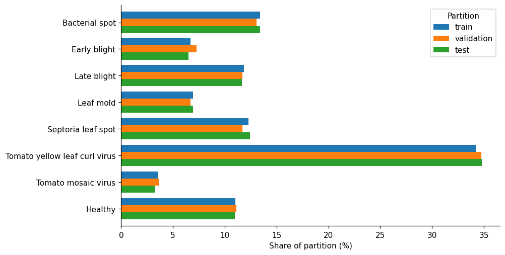
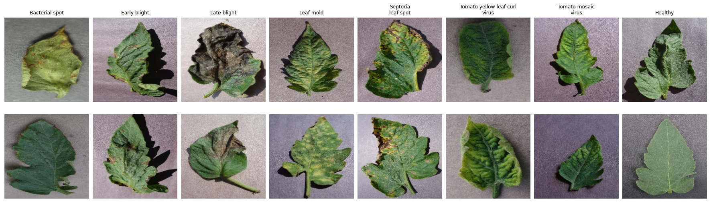
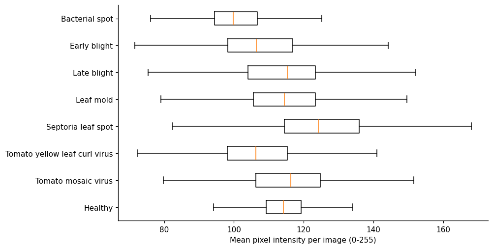
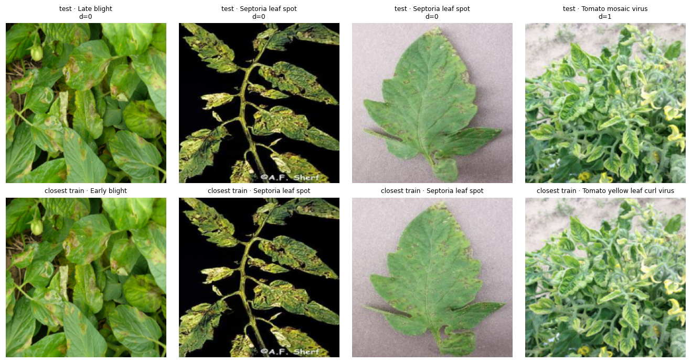
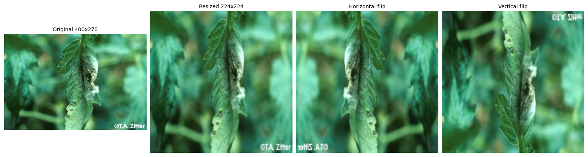
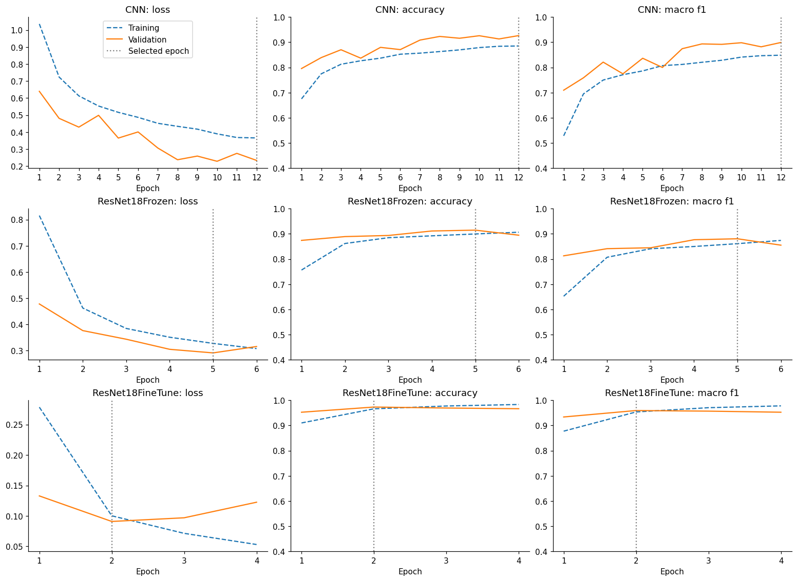
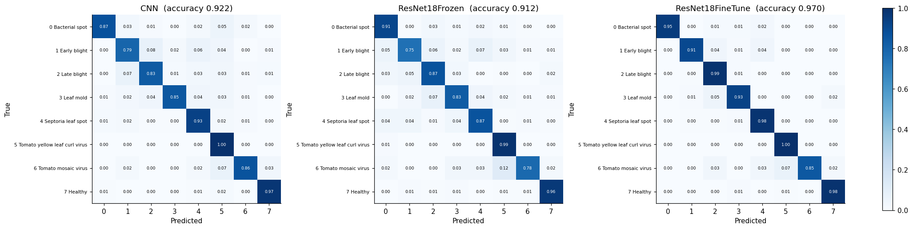
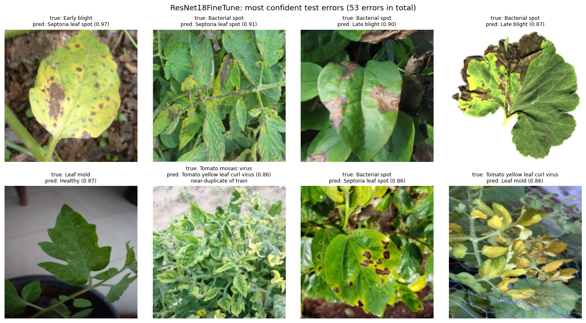

M2 Draft PDF report
Professional report - 15 pages
Preview PDF
1. EDA and data description
Source: 01_eda.ipynb. The Tomato Leaves Dataset combines tomato images from PlantVillage and PlantDoc. Each image has one label: seven diseases or a healthy leaf.
1.1 Read the dataset
Use the split published in the dataset repository (revision c029791). Images are listed by folder; the label is the folder name.
| Class | train | validation | test | Total |
|---|---|---|---|---|
| Bacterial spot | 1930 | 235 | 241 | 2406 |
| Early blight | 966 | 131 | 117 | 1214 |
| Late blight | 1710 | 210 | 209 | 2129 |
| Leaf mold | 999 | 120 | 125 | 1244 |
| Septoria leaf spot | 1771 | 210 | 223 | 2204 |
| Tomato yellow leaf curl virus | 4930 | 624 | 625 | 6179 |
| Tomato mosaic virus | 509 | 66 | 59 | 634 |
| Healthy | 1589 | 200 | 197 | 1986 |
| Total | 14404 | 1796 | 1796 | 17996 |
The published split holds 17,996 images: 14,404 for training and 1,796 each for validation and test. These counts match the M1 proposal. Tomato yellow leaf curl virus is the largest class (6,179 images, 4,930 in training) and Tomato mosaic virus the smallest (634 images, 509 in training).
1.2 Class distribution and imbalance
Compare the share of each class in the three partitions.

The three partitions have almost the same class shares, so validation and test scores describe the same label mix as training. Accuracy alone would be dominated by the large virus class, so the experiments report macro-F1 as well and use it to select checkpoints.
1.3 Original image size and file format
Read only the image headers to learn the original resolution before the resize to 224 × 224.
| Statistic | count | mean | std | min | 25% | 50% | 75% | max |
|---|---|---|---|---|---|---|---|---|
| width | 17996 | 285.9 | 223.6 | 115 | 256 | 256 | 256 | 6000 |
| height | 17996 | 279.8 | 186.9 | 85 | 256 | 256 | 256 | 6000 |
| Size | Images | Format / mode | Images |
|---|---|---|---|
| 256 × 256 | 16889 | JPEG / RGB | 17995 |
| 224 × 224 | 317 | PNG / RGBA | 1 |
| 800 × 600 | 23 | ||
| 1600 × 1200 | 19 | ||
| 1024 × 768 | 15 | ||
| 1200 × 1600 | 13 |
17,995 files are RGB JPEG and one is an RGBA PNG, which the loader converts to RGB. 16,889 images (93.9%) are 256 × 256; 317 are 224 × 224, and the rest range from 115 × 85 to 6000 × 6000. Resizing to 224 × 224 leaves most of the data almost unchanged, but stretches the minority of non-square images.
1.4 Image sources
File names are anonymised (image (N).JPG). PlantVillage photographs are 256 × 256 crops, while PlantDoc images are web photographs of mixed size, so use the image size as a rough source label.
| Class / split | 256 × 256 (PlantVillage-style) | Other size (PlantDoc / web-style) | Other share (%) |
|---|---|---|---|
| Bacterial spot | 2274 | 132 | 5.5 |
| Early blight | 1108 | 106 | 8.7 |
| Late blight | 2004 | 125 | 5.9 |
| Leaf mold | 1110 | 134 | 10.8 |
| Septoria leaf spot | 1995 | 209 | 9.5 |
| Tomato yellow leaf curl virus | 5990 | 189 | 3.1 |
| Tomato mosaic virus | 539 | 95 | 15.0 |
| Healthy | 1869 | 117 | 5.9 |
| train | 13457 | 947 | 6.6 |
| validation | 1718 | 78 | 4.3 |
| test | 1714 | 82 | 4.6 |
The size rule is only a rough proxy for the source. The share of web-style images varies from 3.1% (Tomato yellow leaf curl virus) to 15.0% (Tomato mosaic virus), so a class may partly be recognised by image style rather than by disease. Tomato mosaic virus, the smallest class, has the largest share of web-style photographs.
1.5 Representative images
Show random training images per class at the 224 × 224 model input size.

Most sampled images show a single leaf on a plain grey background. The disease cues are small: spots, yellow areas, curled edges or dark patches. Early blight, Septoria leaf spot and Bacterial spot look alike at this size, so fine texture will matter for the models.
1.6 Colour and brightness
Summarise the mean RGB value of every training image by class.
| Class | R | G | B | Brightness |
|---|---|---|---|---|
| Bacterial spot | 102.4 | 109.7 | 93.3 | 101.8 |
| Early blight | 109.3 | 114.0 | 100.4 | 107.9 |
| Late blight | 113.2 | 115.4 | 101.8 | 110.1 |
| Leaf mold | 111.4 | 117.8 | 111.7 | 113.7 |
| Septoria leaf spot | 129.5 | 132.4 | 117.0 | 126.3 |
| Tomato yellow leaf curl virus | 111.8 | 119.7 | 89.9 | 107.2 |
| Tomato mosaic virus | 116.9 | 118.1 | 114.0 | 116.3 |
| Healthy | 114.3 | 119.6 | 109.8 | 114.6 |
| Training mean (0-1) | 0.4438 | 0.4660 | 0.3936 |

Septoria leaf spot images are the brightest (126.3) and Bacterial spot the darkest (101.8). Tomato yellow leaf curl virus has the lowest blue value (89.9). Colour carries some class information that a small CNN can use, but it may also reflect lighting or background differences between sources. The training mean is close to the ImageNet mean used for normalisation.
1.7 Duplicates and leakage between partitions
Test the published split for byte-identical files (MD5) and near-identical images (64-bit difference hash, Hamming distance at most 4).
| Files without an identical copy | 17938 |
|---|---|
| Duplicate groups | 29 |
| Distinct contents | 17967 |
| Groups spanning two or more partitions | 3 |
| Partition | Images | Identical hash (d=0) | Near duplicate (d≤4) | Share (%) | Same label as train match |
|---|---|---|---|---|---|
| validation | 1796 | 5 | 88 | 4.9 | 55 |
| test | 1796 | 3 | 88 | 4.9 | 63 |
| train (within itself) | 14404 | 719 | 2873 | 19.9 | - |

Exact copies are rare: 17,938 files have no identical copy, and the other 58 form 29 duplicate groups of two (17,967 distinct contents); 3 groups cross partitions. Near duplicates are much more common: 88 validation and 88 test images have a training image within distance 4, but only 55 and 63 of them carry the same label. The four closest test pairs are the same photograph, and two have different labels (Late blight vs Early blight; Tomato mosaic virus vs Tomato yellow leaf curl virus). The published split therefore does not fully keep each photograph in one partition, which the M1 proposal assumed. Only the closest pairs were checked by eye, so the counts are an upper bound on true duplicates.
1.8 Inspect preprocessing
Show one training image before preprocessing, after the 224 × 224 resize, and after the two random training flips. Normalisation uses the ImageNet mean and standard deviation.

Flips produce plausible views because a leaf has no fixed orientation. The channels of one image do not have zero mean and unit variance, because the statistics come from ImageNet.
1.9 EDA conclusions
- Split and size: 17,996 images in 8 classes and a 14,404 / 1,796 / 1,796 split, as in the M1 proposal.
- Imbalance: ratio 9.7 to 1; checkpoints are selected on validation macro-F1 and per-class results are reported.
- Leakage: about 5% of validation and test images have a near duplicate in training, some with a different label. The published split is kept so results stay comparable with the proposal; the effect on the test score is measured in the results.
- Source style: about 6% of images look like web photographs, with a different share per class; errors are reported by source.
- Preprocessing: resize to 224 × 224, ImageNet normalisation, random horizontal and vertical flips for training only, the same for the CNN and ResNet-18.
2. Results
Source: 02_results.ipynb. All models use one seed (42) and the published train / validation / test split.
2.1 Model definitions
- CNN (cnn.py): four convolution blocks (16, 32, 64, 64 channels) with batch normalisation, global average pooling, dropout 0.3 and a linear layer. No pretrained weights.
- ResNet18Frozen (resnet.py): ImageNet-pretrained ResNet-18; only the new eight-class linear layer is trained, and the backbone stays in evaluation mode.
- ResNet18FineTune: the same network with all layers trained at a ten times lower learning rate.
- Training (train.py): Adam, batch size 64, gradient norm clipped to 5, best validation macro-F1 checkpoint, CPU with 16 threads.
2.2 Saved runs
| Model | Seed | Parameters | Trainable | Epochs run | Selected epoch | Learning rate | Median epoch seconds |
|---|---|---|---|---|---|---|---|
| CNN | 42 | 61384 | 61384 | 12 | 12 | 0.0010 | 56 |
| ResNet18Frozen | 42 | 11180616 | 4104 | 6 | 5 | 0.0010 | 194 |
| ResNet18FineTune | 42 | 11180616 | 11180616 | 4 | 2 | 0.0001 | 526 |
The CNN selected its last epoch (12 of 12), so the budget, not convergence, ended its training. Frozen ResNet-18 selected epoch 5 of 6 and the fine-tuned model epoch 2 of 4. The total fit time of the fine-tuned run includes a pause of the computer (7,888 s), so the median epoch time is used.
2.3 Validation comparison
| Model | Loss | Accuracy | Macro-F1 |
|---|---|---|---|
| CNN | 0.2330 | 0.9265 | 0.8991 |
| ResNet18Frozen | 0.2911 | 0.9148 | 0.8806 |
| ResNet18FineTune | 0.0909 | 0.9733 | 0.9594 |
Fine-tuned ResNet-18 leads on validation. The CNN is ahead of the frozen backbone.
2.4 Held-out test results
The test set was used once per model, after the checkpoint had been selected.
| Model | Loss | Accuracy | Macro-F1 | Inference ms/image |
|---|---|---|---|---|
| CNN | 0.2383 | 0.9220 | 0.8955 | 6.3545 |
| ResNet18Frozen | 0.2938 | 0.9120 | 0.8754 | 11.4733 |
| ResNet18FineTune | 0.0876 | 0.9705 | 0.9547 | 10.8878 |
The test ranking matches validation. The fine-tuned model is about 5 accuracy points above the other two; the CNN is about 1 point (roughly 18 images) above the frozen model, which one seed cannot separate. Inference times are single measurements on a busy CPU, including data loading, so they are only indicative (the frozen model measured 17.0 ms on validation and 11.5 ms on test).
2.5 Learning curves

CNN validation scores sit above training scores because training metrics include flips and dropout; its curves still rise at epoch 12. Frozen macro-F1 peaks at epoch 5 and drops at epoch 6, a sign of a noisy metric with few validation images in some classes. The fine-tuned model reaches its best validation loss at epoch 2, then starts to overfit.
2.6 Per-class results
| Class | CNN | ResNet18Frozen | ResNet18FineTune | Test images |
|---|---|---|---|---|
| Bacterial spot | 0.921 | 0.902 | 0.974 | 241 |
| Early blight | 0.775 | 0.765 | 0.938 | 117 |
| Late blight | 0.870 | 0.868 | 0.954 | 209 |
| Leaf mold | 0.895 | 0.825 | 0.921 | 125 |
| Septoria leaf spot | 0.910 | 0.881 | 0.963 | 223 |
| Tomato yellow leaf curl virus | 0.967 | 0.978 | 0.994 | 625 |
| Tomato mosaic virus | 0.857 | 0.821 | 0.909 | 59 |
| Healthy | 0.970 | 0.962 | 0.985 | 197 |
Fine-tuned ResNet-18 has the highest F1 for every class. Early blight and Tomato mosaic virus are the hardest for the baselines; fine-tuning raises Early blight to 0.938 but Tomato mosaic virus only to 0.909. The largest class, Tomato yellow leaf curl virus, is easiest for both ResNet-18 models; for the CNN, Healthy is slightly higher (0.970 against 0.967).
2.7 Test confusion matrices

The CNN confuses Early blight with Late blight (8%) and Septoria leaf spot (6%). All three models confuse Tomato mosaic virus with Tomato yellow leaf curl virus (7% CNN and fine-tuned, 12% frozen). Fine-tuning removes most of the blight confusion but not the virus confusion.
2.8 Effect of near-duplicate test images
Compare accuracy on the test images with a near-identical training image (same rule as the EDA) against the rest.
| Model | Near-duplicate images | Accuracy on them | Other images | Accuracy on the rest | Overall |
|---|---|---|---|---|---|
| CNN | 88 | 0.9773 | 1708 | 0.9192 | 0.9220 |
| ResNet18Frozen | 88 | 0.9205 | 1708 | 0.9116 | 0.9120 |
| ResNet18FineTune | 88 | 0.9773 | 1708 | 0.9701 | 0.9705 |
Near duplicates are easier for the CNN, consistent with having seen a copy; for both ResNet-18 models the difference is under 1 point. Removing them changes overall accuracy by less than 0.3 points, so the leakage does not change the ranking. One of the 88 images is worth 1.1 points.
2.9 Confident errors

The most confident errors are field photographs with several leaves or a cluttered background. The fourth and seventh images do not look like tomato leaves, which suggests label noise in the web-sourced part of the data; this has not been checked against the source.
2.10 Errors by image source
| Model | 256 × 256 images | Accuracy (256 × 256) | Other-size images | Accuracy (other sizes) |
|---|---|---|---|---|
| CNN | 1714 | 0.9574 | 82 | 0.1829 |
| ResNet18Frozen | 1714 | 0.9411 | 82 | 0.3049 |
| ResNet18FineTune | 1714 | 0.9930 | 82 | 0.5000 |
The size proxy separates the data sharply. About 41 of the fine-tuned model's 53 errors (77%) come from the 4.6% of test images that are web-style. The 82 images are too few for precise estimates, but the gap is far larger than any difference between models.
2.11 Discussion
- Pretrained fine-tuning is clearly best in this draft: 0.955 test macro-F1 against 0.896 for the CNN, with its best validation score after two epochs.
- A frozen ImageNet backbone did not beat the small CNN: 0.875 against 0.896 macro-F1; with one seed and a 1-point accuracy gap this is not a firm ranking.
- The comparison is not at equal compute: the CNN ran 12 epochs and was still improving, the frozen model 6 and the fine-tuned model 4.
- The hard part is the domain, not the architecture: above 94% accuracy on 256 × 256 lab-style images, 18% to 50% on web-style photographs.
- Leakage is present but does not change the ranking: removing near-duplicate test images moves accuracy by less than 0.3 points.
- Limits of this draft: one seed per model, short training budgets and no hyper-parameter search.